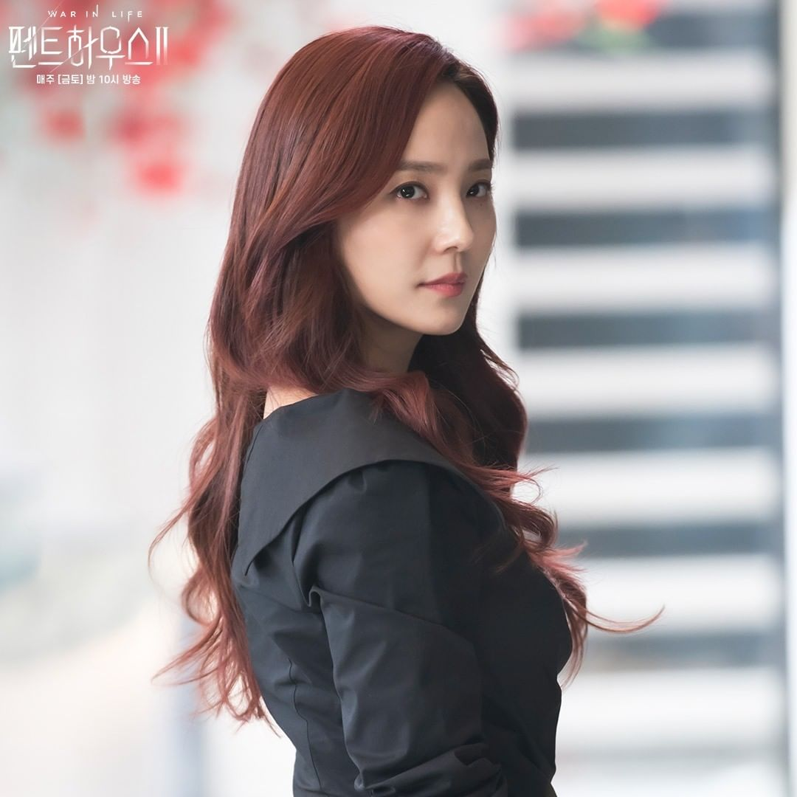
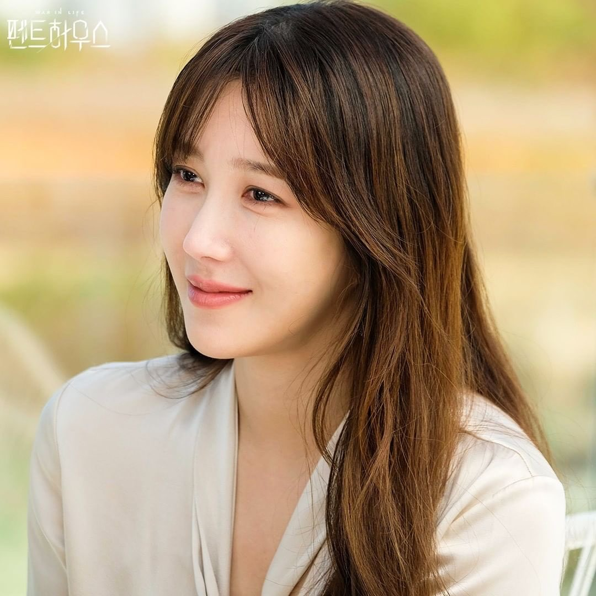
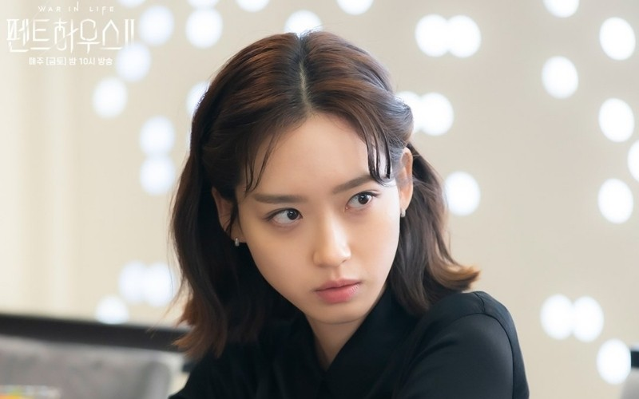

It is the story of a that showcases the two different lives of two women, one famous soprano, and one who's a working class. These two go way back in highschool and have bad blood on each other. Their worlds meet again in a decade and a few when their kids meet in highschool, and the death of a certain character that binds the whole plot and characters together. Many plot twists, dramatic scenes, aggravating characters, and many more await this drama's audience.
| Character | In-Drama Name | Actor/Actress | Info about Character |
|  | Oh Yoon-Hee | Eugene | She is my third favorite character in the series. She is the mother of Bae Rona, and she tries her best for her and her daughter. With everything she does, she tries her best for it whilst being kindand humble. She is also the rival since highschool of Cheon Seo-Jin. |
|  | Shim Su-Ryeon | Lee Ji-Ah | She is my second favorite character in the series. Her character is very nice, to everyone, not only her husband, but also her children no matter how much I want to teach them a thing or two for disrespecting her so much. She is also very elegant, ad her actions are very graceful. Overall, she has a very poise character, and the plot and story of the series plays very well with her character and makes her showcase different personalities depending on the situation. The actress is also very beautiful. |
|  | Joo Seok-Kyung | Han Ji-Hyun | She is my favorite character in the whole series, from Season 1 all the way up to 3. She may be one of the protagonists, but her character is very strong. It was the first time I had so much rage for a fictional character. Her actress is very good, acted and expressed the emotions and words very well. Her character may be evil, but I love the character improvement as the series goes on. She is also my first ever favorite protagonist. |